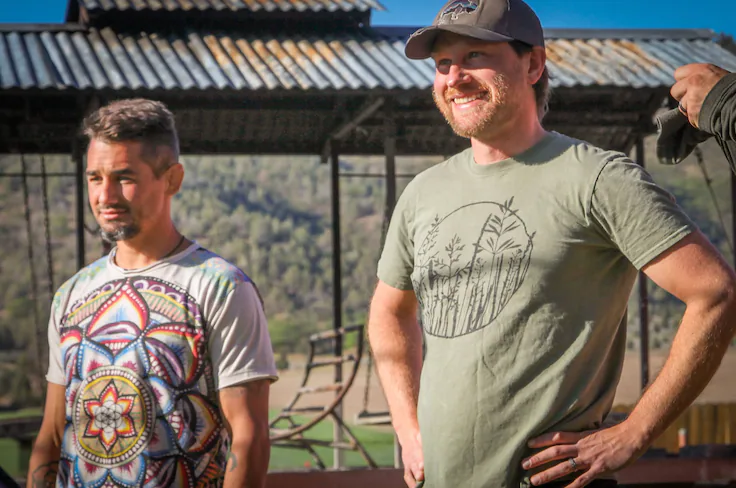

B936 · Embodiment: The Gateway to Lasting Change
Hi {first_name},
Today, I'd like to shed light on a crucial but often overlooked element in transformational work.
While we often acknowledge the power of words and how they shape our stories and reality, there's more...something that goes farther than speaking a story outloud, or through a tool like journaling.
Enter the concept of embodiment, which is increasingly gaining recognition and significance today, especially in men's work, and for good reason.
It can be helpful to look at it in two ways:
One key takeaway is that through embodiment work, we can truly FEEL our bodies - grounded in our feet, legs, and heart, rather than solely residing in our heads. It can open up vast opportunities for deepening our connection to ourselves, the world around us, our health, and intimate relationships.
This is a big reason why I've been diving into embodiment practices and studying the work of someone like John Wineland in recent years. The impact has been very special, to say the least.
In the upcoming 6-week group virtual program, "The Path to Inspired Action: Empowering the Authentic Man Within," we will incorporate embodiment practices each week in different ways. Without these practices, I've observed that much of this type of work tends to lose its deep and lasting impact for men.
Through daily practice, combining the body, mind, and heart accompanied by the breath, we can achieve more sustainable changes in our lives.
 We have limited availability, accepting only the most motivated 12 men into this program, which will commence at the end of September.
Applications are already coming in, and if you feel connected to this message, I invite you to click here to learn more and start the application process.
Thank you for taking the time to read this email. I appreciate you and look forward to the possibility of embarking on this journey together.
Best regards, Mike |